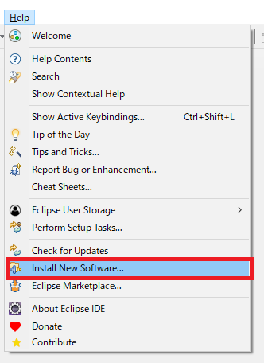
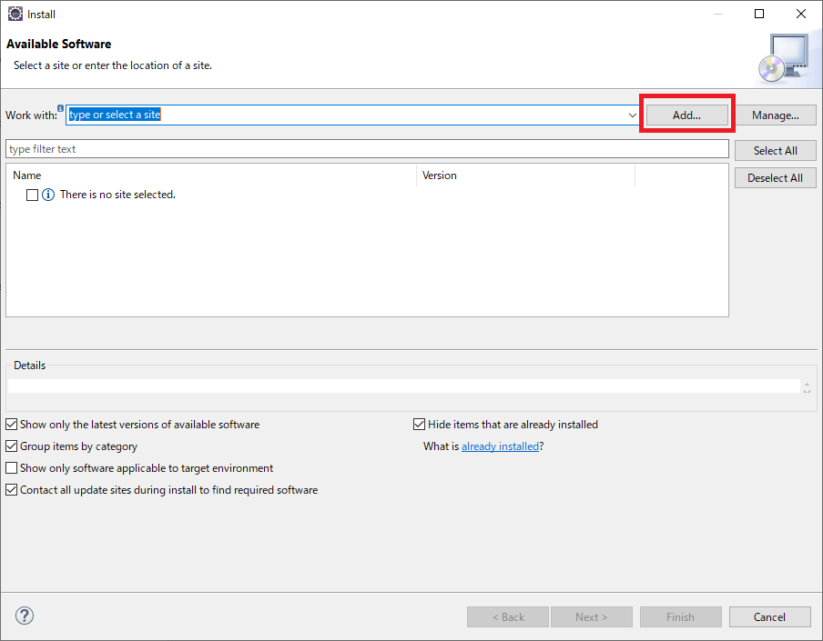
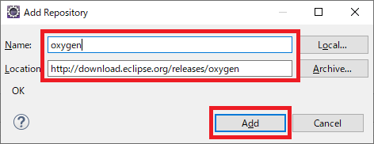
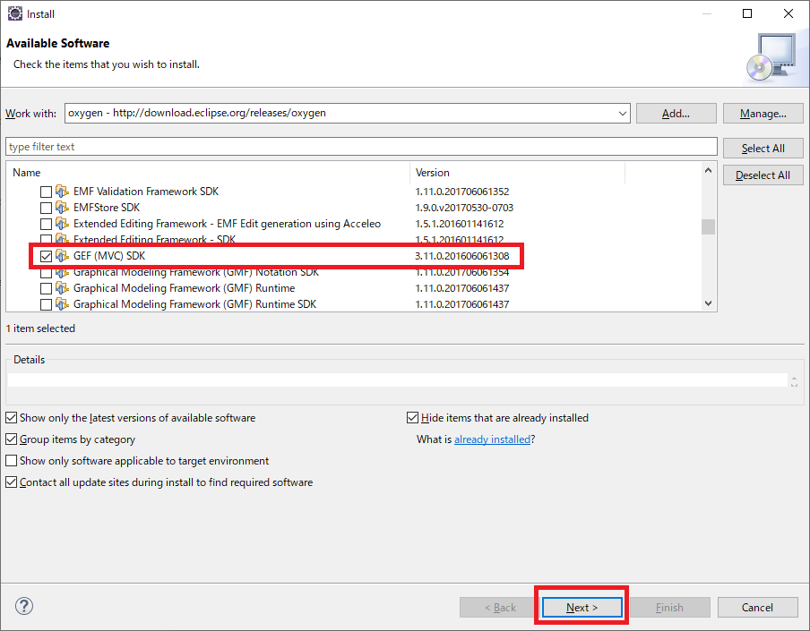
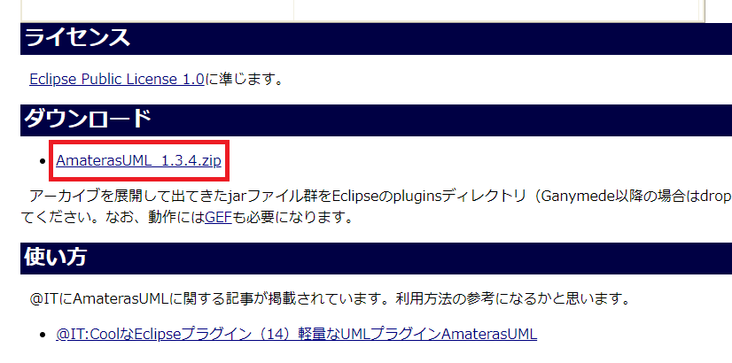

Plugin¶
AmaterasUML¶
http://amateras.osdn.jp/cgi-bin/fswiki/wiki.cgi?page=AmaterasUML
インストール¶
GEFのインストール¶
Eclipseのメニューから「Help」→「Install New Software」を開きます.
「Add」ボタンをクリックします.
以下の値を入力し, 「Add」ボタンをクリックします.
- Name
(任意)
「Modeling」配下の「GEF (MVC) SDK」にチェックを入れ, 「Next」ボタンをクリックします.
そのままインストールを続行します.
AmaterasUMLのインストール¶
AmaterasUML から, AmaterasUML_1.3.4.zip をダウンロードします.
ダウンロードしたZIPファイルを展開し, 中のjarファイルを全て, Eclipseがインストールフォルダのdropinsフォルダに配置します.
Eclipseを再起動します.